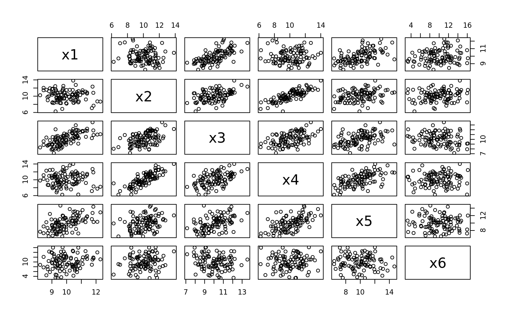

Principal Components
## Generate some data
library(mvtnorm)
mu = rep(10, 6)
cov = matrix(nrow = 6, byrow = TRUE,
c(1, 0, 1, 0, 1, 1,
0, 2, 1, 2, 1, 1,
1, 1, 2, 1, 1, 0,
0, 2, 1, 3, 2, 1,
1, 1, 1, 2, 4, 1,
1, 1, 0, 1, 1, 10)
)
set.seed(1000)
X = rmvnorm(100, mu, cov)
colnames(X) = paste("x", 1:6, sep = "")
## How do the data correlate?
round(cor(X), 3) x1 x2 x3 x4 x5 x6
x1 1.000 -0.100 0.671 0.013 0.544 0.162
x2 -0.100 1.000 0.464 0.816 0.314 0.179
x3 0.671 0.464 1.000 0.507 0.462 -0.160
x4 0.013 0.816 0.507 1.000 0.582 0.051
x5 0.544 0.314 0.462 0.582 1.000 -0.044
x6 0.162 0.179 -0.160 0.051 -0.044 1.000
x1 x2 x3 x4
Min. : 8.200 Min. : 6.259 Min. : 7.135 Min. : 6.210
1st Qu.: 9.313 1st Qu.: 9.209 1st Qu.: 9.045 1st Qu.: 8.927
Median : 9.828 Median :10.253 Median :10.169 Median :10.089
Mean : 9.975 Mean :10.109 Mean :10.087 Mean :10.084
3rd Qu.:10.614 3rd Qu.:11.006 3rd Qu.:11.007 3rd Qu.:11.262
Max. :12.297 Max. :13.834 Max. :13.563 Max. :14.018
x5 x6
Min. : 6.399 Min. : 3.260
1st Qu.: 8.421 1st Qu.: 8.009
Median :10.153 Median : 9.771
Mean : 9.941 Mean : 9.869
3rd Qu.:11.230 3rd Qu.:11.926
Max. :14.687 Max. :16.130 ## Build the principal components. We do not need to standardize the data
## since all of the variables are roughly the same scale.
(pr = prcomp(X))Standard deviations (1, .., p=6):
[1] 3.017891e+00 2.563572e+00 1.517959e+00 1.123358e+00 5.274371e-01
[6] 1.472533e-08
Rotation (n x k) = (6 x 6):
PC1 PC2 PC3 PC4 PC5 PC6
x1 0.04204824 0.13561610 -0.43777882 -0.40016623 -0.02461578 -0.79211803
x2 0.10306755 0.37620383 0.53544098 -0.09946666 0.71557069 -0.19802951
x3 -0.06111086 0.35286917 -0.07161650 -0.78263310 -0.09490671 0.49507377
x4 0.05321194 0.56786999 0.42326271 0.16724994 -0.65448653 -0.19802951
x5 -0.01790754 0.62553452 -0.57601203 0.43473997 0.21995796 0.19802951
x6 0.99031424 -0.04233845 -0.07471658 -0.02207772 -0.04014029 0.09901475## Principal components rotation matrix is actually the same as the eigen vectors
eigen(cov(X))$vectors [,1] [,2] [,3] [,4] [,5]
[1,] 0.04204824 0.13561610 0.43777882 0.40016623 0.02461578
[2,] 0.10306755 0.37620383 -0.53544098 0.09946666 -0.71557069
[3,] -0.06111086 0.35286917 0.07161650 0.78263310 0.09490671
[4,] 0.05321194 0.56786999 -0.42326271 -0.16724994 0.65448653
[5,] -0.01790754 0.62553452 0.57601203 -0.43473997 -0.21995796
[6,] 0.99031424 -0.04233845 0.07471658 0.02207772 0.04014029
[,6]
[1,] 0.79211803
[2,] 0.19802951
[3,] -0.49507377
[4,] 0.19802951
[5,] -0.19802951
[6,] -0.09901475## Build the principal components from the coefficients
X.pca = X %*% pr$rotation
## The variance of the principal components is equal to the eigen values
eigen(cov(X))$values[1] 9.107665e+00 6.571900e+00 2.304199e+00 1.261933e+00 2.781899e-01
[6] -5.334563e-16 PC1 PC2 PC3 PC4 PC5
9.107665e+00 6.571900e+00 2.304199e+00 1.261933e+00 2.781899e-01
PC6
2.168355e-16 Importance of components:
PC1 PC2 PC3 PC4 PC5 PC6
Standard deviation 3.0179 2.5636 1.5180 1.12336 0.52744 1.473e-08
Proportion of Variance 0.4665 0.3366 0.1180 0.06464 0.01425 0.000e+00
Cumulative Proportion 0.4665 0.8031 0.9211 0.98575 1.00000 1.000e+00